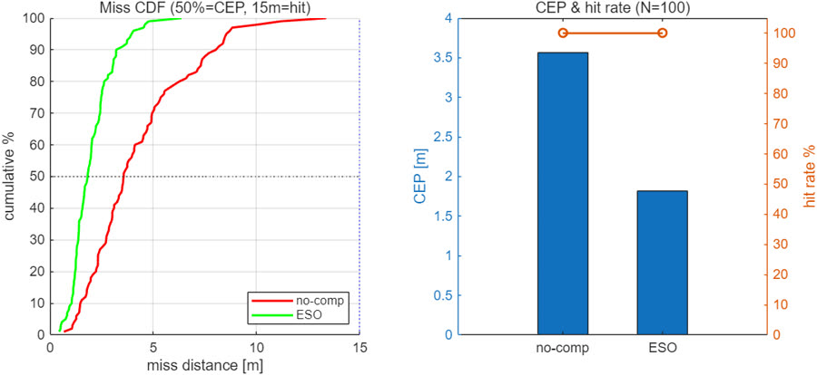
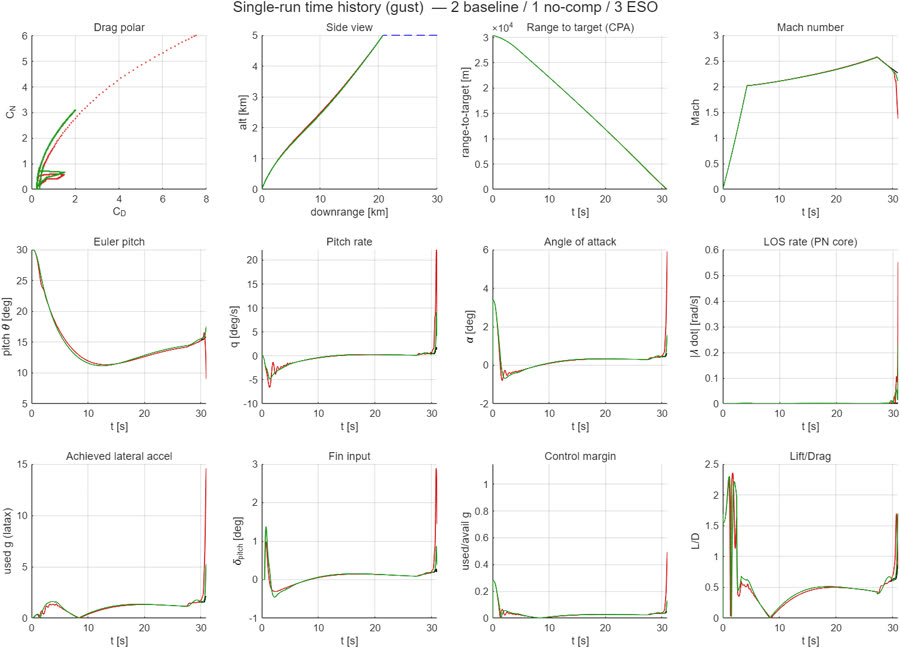

제원 입력만으로 지대공 미사일의 6자유도(6-DOF) 요격 모델을 자동 생성하는 범용 시뮬레이션 프레임워크를 구축하고, 종말 유도 단계의 외란(난류·돌풍) 취약성을 극복하기 위해 선형 확장상태관측기(LESO) 기반 능동 외란거부제어(ADRC)를 적용·평가했습니다. 결과는 Unity 3D(Cesium 지도) 위에 가시화해 교전 과정을 직관적으로 분석할 수 있게 했습니다.


🏆 제8회 전국 대학생 캡스톤 디자인 경진대회 우수상 (KAIROS, 2026) · Publications에서 보기 →